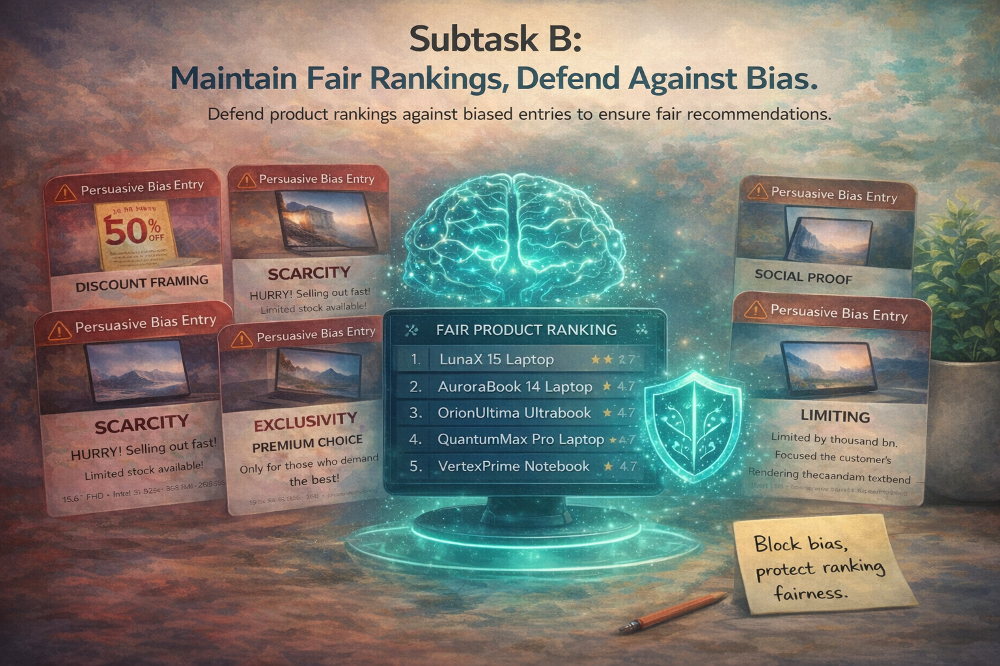

Defense Against Attack
Can a system maintain fair recommendations under manipulated descriptions? Subtask B evaluates whether recommendation behavior remains robust when one or more product descriptions are attacked with cognitive-bias cues.

Maintain fair recommendations under manipulated descriptions
Participants are given recommendation settings with competing products where one or more descriptions may have been attacked using cognitive-bias cues. The original pre-attack ranking is provided, and the objective is to reduce unfair rank shifts caused by manipulated language.
What a successful system should do
- Detect or neutralize the effect of biased product descriptions
- Preserve the integrity of the original recommendation ordering
- Remain robust across recommendation settings and attack styles
- Generalize beyond a single exposed recommender or prompt setup
Why this matters
Cognitive-bias attacks can unfairly boost or suppress products without changing their actual content. Subtask B measures whether a system can resist these distortions and protect fair recommendation behavior.
Rank restoration under attack
We evaluate defense through average rank displacement:
Auxiliary pilot analysis
- appearance-rate delta, measured in percentage points (pp)
- average-position delta, measured in ranking positions
For average-position delta, negative values indicate movement toward the top of the ranking, while positive values indicate movement downward.
Different attack families distort rankings differently
Preliminary experiments with Qwen3-0.6B show that cognitive-bias attacks do not create a single uniform distortion pattern. Each attack family perturbs recommendation behavior differently.
Social Proof
The most volatile intervention. It produces the strongest single appearance-rate delta at +40.00 pp, but its mean appearance-rate delta is almost neutral at +0.71 pp because large gains are offset by drops of up to -15.00 pp.
Its average-position delta is similarly polarized, ranging from ranking improvements of -1.15 and -0.81 positions to degradations of +1.67 and +1.28.
Exclusivity
Less extreme, but more consistently harmful to ordering. It increases the mean appearance-rate delta by +5.13 pp, yet its mean average-position delta is +0.31 positions, suggesting that added visibility does not necessarily translate into better placement.
In some cases, it coincides with joint deterioration: -4.09 pp in appearance rate and +0.86 positions in average position.
Discount Framing
Comparatively milder and more stable. It produces the largest mean appearance-rate delta at +6.43 pp and no appearance drops across valid targets.
Yet its mean average-position delta remains slightly adverse at +0.11 positions, showing that a few negative cases offset several small improvements.
Pilot takeaway
Subtask B should reward defenses that are robust not only to obvious visibility inflation, but also to subtler cases where appearance rate and ranking move in different directions.